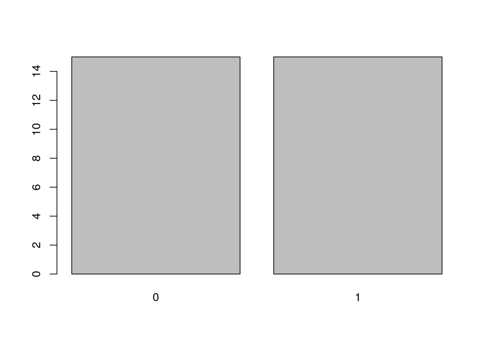
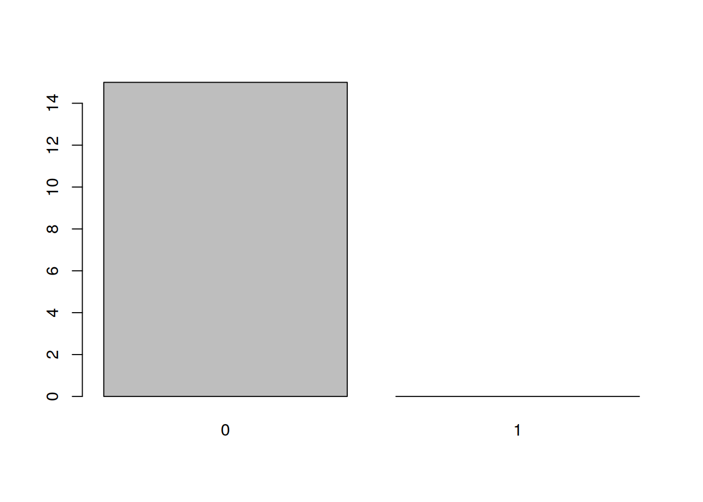

Chapter 2 Lab 2
Today, you will learn about basic data structures in R and how to manipulate them. Before we kick off, there’s one thing we’d like to address. Some people feel reluctant to play around with R for fear of breaking something. This is quite normal, especially if they don’t really understand how R works yet. If this is your case, we’d like to reassure you that there’s nothing you can do by typing in the script or the console that will cause anything to explode (unless you really know what you’re doing and you set out to cause problems). So, be curious, play around, try things out, look up other people’s code (from trusted sources), break it down, try to understand it. That’s the best way to learn!
2.1 First things first

Task: Create a new RStudio project in a new directory called “Lab2” within your “Univariate” folder.
Last week, we discussed objects in R. We talked about how basically everything in R is an object and how we can assign some content to an object using the <- assignment operator. This week, we will talk about the different kinds (classes) of content and the different ways this content can be organised (data structures).
2.2 Classes
All data in R are organised in some structures. We’ve already encountered one of them – vectors – but there are other types we will talk about in due course. First let’s focus on what these structures are made up of – elements. An element is a single number, boolean (TRUE/FALSE), or a character string (anything in “quotes”). Elements come in several classes:
"numeric", as the name suggests, a numeric element is a single number: 1, 2, -725, 3.14159265, etc.. A numeric element is never in ‘single’ or “double” quotes! Numbers are cool because you can do a lot of maths (and stats!) with them.
"character", a string of characters, no matter how long. It can be a single letter,'g', but it can equally well be a sentence,"Elen s?la lumenn' omentielvo."(if you want the string to contain any single quotes, use double quotes to surround the string with and vice versa). Notice that character strings inRare always in ‘single’ or “double” quotes. Conversely anything in quotes is a character string:
class(3)## [1] "numeric"Task: Try running the same command, just put the 3 in quotes.
class("3") # in quotes, therefore character!## [1] "character"Task: It stands to reason that you can’t do any maths with cahracter strings, not even if it’s a number that’s inside the quotes! Try adding "3" and "2".
"3" + "2"## Error in "3" + "2": non-numeric argument to binary operator
The error message R gives you is a little cryptic so let’s decode it. “Binary operator” refers to the addition. Other binary operators are, e.g., *, ^, or %% (modulo). So R is telling you that you are trying to perform an arithmetic operation on non-numbers. Why does it not just say so like a normal person? No idea! You are most likely to get this error when you try to calculate something from your data (e.g., a total score) but one of the variables is actually not numeric for some reason. Maybe the data weren’t read in right or you’ve selected the wrong column, etc.
"logical", a logical element can take one of two values,TRUEorFALSE. Logicals are usually the output of logical operations (anything that can be phrased as a yes/no question, e.g., is x equal to y?). In formal logic,TRUEis represented as 1 andFALSEas 0. This is also the case inR:
# recall that c() is used to bind elements into a vector
# (that's just a fancy term for an ordered group of elements)
class(c(TRUE, FALSE))## [1] "logical"Task: We can force (‘coerce’, in R jargon) the vector to be numeric. Try doing that using the as.numeric() function instead of class().
as.numeric(c(TRUE, FALSE))## [1] 1 0This has interesting implications. First, is you have a logical vector of many TRUEs and FALSEs, you can quickly count the number of TRUEs by just taking the sum of the vector:
# consider vector of 50 logicals
x## [1] TRUE FALSE FALSE TRUE FALSE TRUE FALSE FALSE FALSE FALSE FALSE
## [12] TRUE TRUE FALSE TRUE TRUE TRUE TRUE TRUE TRUE FALSE TRUE
## [23] FALSE TRUE TRUE TRUE FALSE TRUE TRUE FALSE TRUE TRUE TRUE
## [34] TRUE FALSE TRUE FALSE FALSE TRUE TRUE TRUE TRUE FALSE FALSE
## [45] TRUE FALSE TRUE TRUE TRUE FALSE# number of TRUEs
sum(x)## [1] 30# number of FALSEs is 50 minus number of TRUEs
length(x) - sum(x)## [1] 20Second, you can perform all sorts of arithmetic operations on logicals:
# TRUE/FALSE can be shortened to T/F
T + T## [1] 2F - T## [1] -1(T * T) + F## [1] 1Third, you can coerce numeric elements to valid logicals:
# zero is FALSE
as.logical(0)## [1] FALSE# everything else is TRUE
as.logical(c(-1, 1, 12, -231.3525))## [1] TRUE TRUE TRUE TRUENow, you may wonder that use this can possible be?! Well, this way you can perform basic logical operations, such as AND, OR, and XOR (see Lecture 2):
# x * y is equivalent to x AND y
as.logical(T * T)## [1] TRUEas.logical(T * F)## [1] FALSEas.logical(F * T)## [1] FALSEas.logical(F * F)## [1] FALSE# x + y is equivalent to x OR y
as.logical(T + T)## [1] TRUEas.logical(T + F)## [1] TRUEas.logical(F + T)## [1] TRUEas.logical(F + F)## [1] FALSE# x - y is equivalent to x XOR y (eXclusive OR, either-or)
as.logical(T - T)## [1] FALSEas.logical(T - F)## [1] TRUEas.logical(F - T)## [1] TRUEas.logical(F - F)## [1] FALSE
"factor", factors are a bit weird. They are used mainly for tellingRthat a vector represents a categorical variable. For instance, you can be comparing two groups, treatment and control.
# create a vector of 15 "control"s and 15 "treatment"s
x <- rep(c("control", "treatment"), each = 15)
x## [1] "control" "control" "control" "control" "control"
## [6] "control" "control" "control" "control" "control"
## [11] "control" "control" "control" "control" "control"
## [16] "treatment" "treatment" "treatment" "treatment" "treatment"
## [21] "treatment" "treatment" "treatment" "treatment" "treatment"
## [26] "treatment" "treatment" "treatment" "treatment" "treatment"Task: Run the code above. Don’t copy-paste, type it in manually. It will help you learn the syntax. Now, turn x into a factor using factor() or as.factor().
# turn x into a factor
x <- as.factor(x)
x## [1] control control control control control control control
## [8] control control control control control control control
## [15] control treatment treatment treatment treatment treatment treatment
## [22] treatment treatment treatment treatment treatment treatment treatment
## [29] treatment treatment
## Levels: control treatmentThe first thing to notice is the line under the last printout that says “Levels: control treatment”. This informs you that x is now a factor with two levels (or, a categorical variable with two categories).
Second thing you should take note of is that the words control and treatment don’t have quotes around them. This is another way R uses to tell you this is a factor.
With factors, it is important to understand how they are represented in R. Despite, what they look like, under the hood, they are numbers. A one-level factor is a vector of 1s, a two-level factor is a vector of 1s and 2s, a n-level factor is a vector of 1s, 2s, 3s … ns. The levels, in our case control and treatment, are just labels attached to the 1s and 2s. Let’s demonstrate this:
typeof(x)## [1] "integer"# integer is fancy for "whole number"Task: Try coercing x to numeric and see what happens. Don’t assign the result to x, just have it prited out.
as.numeric(x)## [1] 1 1 1 1 1 1 1 1 1 1 1 1 1 1 1 2 2 2 2 2 2 2 2 2 2 2 2 2 2 2Task: Now look at the levels() of x.
levels(x)## [1] "control" "treatment"The labels attached to the numbers in a factor can be whatever. Let’s say that in your raw data file, treatment group is coded as 1 and control group is coded as 0.
# create a vector of 15 zeros and 15 ones
x <- rep(0:1, each = 15)
x## [1] 0 0 0 0 0 0 0 0 0 0 0 0 0 0 0 1 1 1 1 1 1 1 1 1 1 1 1 1 1 1# turn x into a factor
x <- as.factor(x)
x## [1] 0 0 0 0 0 0 0 0 0 0 0 0 0 0 0 1 1 1 1 1 1 1 1 1 1 1 1 1 1 1
## Levels: 0 1Since x is now a factor with levels 0 and 1, we know that it is stored in R as a vector of 1s and 2s and the zeros and ones, representing the groups, are only labels:
as.numeric(x)## [1] 1 1 1 1 1 1 1 1 1 1 1 1 1 1 1 2 2 2 2 2 2 2 2 2 2 2 2 2 2 2levels(x)## [1] "0" "1"The fact that factors in R are represented as labelled integers has interesting implications. First, certain functions will coerce factors into numeric vectors which can shake things up. cbind() which binds its arguments by column is one such function:
x## [1] 0 0 0 0 0 0 0 0 0 0 0 0 0 0 0 1 1 1 1 1 1 1 1 1 1 1 1 1 1 1
## Levels: 0 1# let's bind the first 15 elements and the last 15 elements together as columnsTask: Try cbind()-ing the first 15 and the last 15 elements of x into two columns. Hint: x[1:15] gives you the first 15 elements.
# printout truncated to first 5 rows to save space
cbind(x[1:15], x[16:30])## [,1] [,2]
## [1,] 1 2
## [2,] 1 2
## [3,] 1 2
## [4,] 1 2
## [5,] 1 2
## [ reached getOption("max.print") -- omitted 10 rows ]cbind() binds the vectors you provide into the columns of a matrix. Since matrices (yep, that’s the plural of ‘matrix’; also, more on matrices later) can only contain logical, numeric, and character elements, the cbind() function coerces the elements of the x factor (haha, the X-factor) into numeric, stripping the labels and leaving only 1s and 2s.
The other two consequences of this labelled numbers system stem from the way the labels are stored. Every R object comes with a list of so called attributes attached to it. These are basically information about the object. For objects of class factor, the attributes include its levels (or the labels attached to the numbers) and class:
attributes(x)## $levels
## [1] "0" "1"
##
## $class
## [1] "factor"So the labels are stored separately of the actual elements. This means, that even if you delete some of the numbers, the labels stay the same. Let’s demonstrate this implication on the plot() function. This function is smart enough to know that if you give it a factor it should plot it using a bar chart, and not a histogram or a scatter plot (more on plots next week).
Task: Try plotting x with the plot() function. The result should be something like this:
plot(x)
Task: Now, let’s take the first 15 elements of x, which are all 0s, store them in y and plot them:
y <- x[1:15]
plot(y)
As you can see, even though our new object y only includes 0s, the levels attribute still tells R that this is a factor of (at least potentially) two levels: "0" and "1" and so plot() leaves a room for the 1s.
The last consequence is directly related to this. Since the levels of an object of class factor are stored as its attributes, any additional values put inside the objects will be invalid and turned into NAs (R will warn us of this). In other words, you can only add those values that are among the ones produced by levels() to an object of class factor:
Task: Try adding invalid values -4 and 3 to the end of vector x (that’s x[31:32]) and then print out x to see what happened.
x[31:32] <- c(-4, 3)## Warning in `[<-.factor`(`*tmp*`, 31:32, value = c(-4, 3)): invalid factor
## level, NA generatedx## [1] 0 0 0 0 0 0 0 0 0 0 0 0 0 0
## [15] 0 1 1 1 1 1 1 1 1 1 1 1 1 1
## [29] 1 1 <NA> <NA>
## Levels: 0 1As you can see, R sort of goes with it but warns you that you are adding values that are not valid levels of the factor. Warnings are different from errors in that the commands still get executed but the outcome might not be what you want it to be. You need to be sure you understand the behaviour in order to judge whether or not this is a problem in any particular situation. The only way to add these values to a factor is to first coerce it to numeric, then add the values, and then turn it back into factor:
# coerce x to numeric
x <- as.numeric(x[1:30])
class(x)## [1] "numeric"# but remember that 0s and 1s are now 1s and 2s!
x## [1] 1 1 1 1 1 1 1 1 1 1 1 1 1 1 1 2 2 2 2 2 2 2 2 2 2 2 2 2 2 2# so subtract 1 to make the values 0s and 1s again
x <- x - 1
# add the new values
x <- c(x, -4, 3)
# back into fractor
x <- as.factor(x)
x## [1] 0 0 0 0 0 0 0 0 0 0 0 0 0 0 0 1 1 1 1 1 1 1 1
## [24] 1 1 1 1 1 1 1 -4 3
## Levels: -4 0 1 3# SUCCESS!
# reset
x <- as.factor(rep(0:1, each = 15))
# one-liner
x <- as.factor(c(as.numeric(x[1:30]) - 1, -4, 3))
x## [1] 0 0 0 0 0 0 0 0 0 0 0 0 0 0 0 1 1 1 1 1 1 1 1
## [24] 1 1 1 1 1 1 1 -4 3
## Levels: -4 0 1 3Told you factors were weird…
"ordered", finally, these are the same as factors but, in addition to having levels, these levels are ordered and thus allow comparison (notice theLevels: 0 < 1below):
# create an ordered x
x <- as.ordered(rep(0:1, each = 15))
x## [1] 0 0 0 0 0 0 0 0 0 0 0 0 0 0 0 1 1 1 1 1 1 1 1 1 1 1 1 1 1 1
## Levels: 0 < 1# we can now compare the levels
x[1] < x[30]## [1] TRUE# this is not the case with factors
y <- as.factor(rep(0:1, each = 15))
y[1] < y[30]## Warning in Ops.factor(y[1], y[30]): '<' not meaningful for factors## [1] NAObjects of class ordered are useful for storing ordinal variables, e.g., age group.
In addition to these five sorts of elements, there are three special wee snowflakes:
NA, stands for “not applicable” and is used for missing data. Unlike other kinds of elements, it can be bound into a vector along with elements of any class.NaN, stands for “not a number”. It is technically of classnumericbut only occurs as the output of invalid mathematical operations, such as dividing zero by zero or taking a square root of a negative number:
0 / 0## [1] NaNsqrt(-12)## Warning in sqrt(-12): NaNs produced## [1] NaNInf(or-Inf), infinity. Reserved for division of a non-zero number by zero (no, it’s not technically right):
235 / 0## [1] Inf-85.123 / 0## [1] -Inf
As you can see, understanding how R represents and treats different classes of data is crucial for data processing and analysis as well as avoiding potential pitfalls.
2.3 Data structures
So that’s most of what you need to know about elements. Let’s talk about putting elements together. As mentioned above, elements can be grouped in various data structures. These differ in the ways in which they arrange elements:
- vectors arrange elements in a line. they don’t have dimensions and can only contain elements of same class (e.g.,
"numeric","character","logical").
# a vector
letters[5:15]## [1] "e" "f" "g" "h" "i" "j" "k" "l" "m" "n" "o"If you try to force elements of different classes to a single vector, they will all be converted to the most complex class. The order of complexity, from least to most complex, is: logical, numeric, and character. Elements of class factor and ordered cannot be meaningfully bound in a vector with other classes (nor with each other): they either get converted to numeric, character - if you’re lucky - or to NA.
# c(logical, numeric) results in numeric
x <- c(T, F, 1:6)
x## [1] 1 0 1 2 3 4 5 6class(x)## [1] "integer"# integer is like numeric but only for whole numbers to save computer memory
# adding character results in character
x <- c(x, "foo")
# the numbers 1-6 are not numeric any more!
x## [1] "1" "0" "1" "2" "3" "4" "5" "6" "foo"Task: Verify that this is indeed the case by looking at class of x.
class(x)## [1] "character"
- matrices arrange elements in a square/rectangle, i.e., a two-dimensional arrangement of rows and columns. They can also only accommodate elements of the same class and cannot store attributes of elements. That means, you can’t use them to store (ordered) factors.
# a matrix
matrix(sample(20), ncol = 5) # must be square/rectangular## [,1] [,2] [,3] [,4] [,5]
## [1,] 7 1 9 16 10
## [2,] 18 15 6 20 12
## [3,] 14 13 3 8 2
## [4,] 4 11 5 17 19# not suitable for factors
x <- factor(sample(10, 20, replace = T))
x## [1] 6 10 7 8 3 4 1 2 6 2 2 1 5 1 8 4 10 10 6 9
## Levels: 1 2 3 4 5 6 7 8 9 10Task: Create a new factor x using the command above and put it in a matrix with 5 columns to see what happens.
# not factors any more!
matrix(x, ncol = 5)## [,1] [,2] [,3] [,4] [,5]
## [1,] "6" "3" "6" "5" "10"
## [2,] "10" "4" "2" "1" "10"
## [3,] "7" "1" "2" "8" "6"
## [4,] "8" "2" "1" "4" "9"
- lists arrange elements in a collection of vectors or other data structures. Different vectors/structures can be of different lengths and contain elements of different classes. Elements of lists and, by extension, data frames can be accessed using the
$operator, provided we gave them names.
# a list
my_list <- list(
# 1st element of list is a numeric matrix
A = matrix(rnorm(20, 1, 1), ncol = 5),
# 2nd element is a character vector
B = letters[1:5],
# third is a data.frame
C = data.frame(x = c(1:3), y = LETTERS[1:3])
)
my_list## $A
## [,1] [,2] [,3] [,4] [,5]
## [1,] 2.370343 1.7627046 1.1591492 0.9500066 0.3882741
## [2,] 2.039706 1.7531991 -0.8776922 1.7634308 1.1053965
## [3,] 1.490569 0.1393050 3.1276867 0.3352242 1.0815455
## [4,] 1.309309 0.5922975 2.0394034 -0.5445432 0.8034688
##
## $B
## [1] "a" "b" "c" "d" "e"
##
## $C
## x y
## 1 1 A
## 2 2 B
## 3 3 C# we can use the $ operator to access NAMED elements of lists
my_list$B## [1] "a" "b" "c" "d" "e"# this is also true for data frames
my_list$C$x## [1] 1 2 3# but not for vectors or matrices
my_list$A$1## Error: <text>:2:11: unexpected numeric constant
## 1: # but not for vectors or matrices
## 2: my_list$A$1
## ^
- data frames are lists but have an additional constraint: all the vectors of a
data.framemust be of the same length. That is the reasons why your datasets are always rectangular.
Task: Create a data frame called df that looks like the one from Lecture 2. The id and dpt variables should be factors, degree should be ordered, and age should be numberic. Hint: The function that creates a data frame is data.frame() and is used the same way as list(), e.g., data.frame(variable1_name = vector1, variable2_name = vector2...). The data frame should look like this:
df <- data.frame(id = factor(1001:1006), age = c(23, 25, 33, 26, 25, 24),
eye_col = factor(c("blue", "brown", "brown", "green", "blue", "brown")),
dpt = factor(c("psy", "cog", "lel", "psy", "phi", "lel")),
degree = ordered(c(3, 1, 1, 1, 2, 2), labels = c("1", "2:1", "2:2")))
df## id age eye_col dpt degree
## 1 1001 23 blue psy 2:2
## 2 1002 25 brown cog 1
## 3 1003 33 brown lel 1
## 4 1004 26 green psy 1
## 5 1005 25 blue phi 2:1
## 6 1006 24 brown lel 2:1
Different data structures are useful for different things: data frames are like spreadsheets – each row represents an observation and each column represents a variable in your data set. Vectors are often used as representations of a single variable or observation. Matrices are the result of operations such as cbind(), rbind(), and others and lists are good for intermediate steps in complex data processing and, importantly, the output of many statistical methods in R. No matter the structure, though, bear in mind that, ultimately, they are all just bunches of elements. This understanding is crucial for working with data.
2.3.1 Subsetting
Now that you understand that all data boil down to elements, let’s look at how to ask R for the subsets elements you want.
There are only two ways to do this:
- indices
- logical vector
Let’s take a closer look at indexing now. We’ll save logical vector subsetting for next week. Indexing is a way of asking for elements of a data structure by simply providing the numeric positions of the desired elements in the structure (vector, list…) in a set of square brackets [] at the end of the object name:
x <- c("I", " ", "l", "o", "v", "e", " ", "R")
# get the 6th element
x[6]## [1] "e"
To get more than just one element at a time, you need to provide a vector of indices. For instance, to get the elements 3-6 of x, we can do:
x[3:6]## [1] "l" "o" "v" "e"c(3, 4, 5, 6) inside the square brackets.
Task: Try doing that. First create the x vector as above and then subset it using c(3, 4, 5, 6).
x[c(3, 4, 5, 6)]## [1] "l" "o" "v" "e"
Remember that some structures can contain as their elements other structures. For example asking for the first element of my_list will return:
my_list[1]## $A
## [,1] [,2] [,3] [,4] [,5]
## [1,] 2.370343 1.7627046 1.1591492 0.9500066 0.3882741
## [2,] 2.039706 1.7531991 -0.8776922 1.7634308 1.1053965
## [3,] 1.490569 0.1393050 3.1276867 0.3352242 1.0815455
## [4,] 1.309309 0.5922975 2.0394034 -0.5445432 0.8034688
The $A at the top of the output indicates that we have accessed the element A of my_list but not really accessed the matrix itself. Thus, at this stage, we wouldn’t be able to ask for its elements. To access the matrix contained in my_list$A, we need to write either exactly that, or use double brackets:
my_list[[1]]## [,1] [,2] [,3] [,4] [,5]
## [1,] 2.370343 1.7627046 1.1591492 0.9500066 0.3882741
## [2,] 2.039706 1.7531991 -0.8776922 1.7634308 1.1053965
## [3,] 1.490569 0.1393050 3.1276867 0.3352242 1.0815455
## [4,] 1.309309 0.5922975 2.0394034 -0.5445432 0.8034688# with the $A now gone from output, we can access the matrix itself
my_list[[1]][1]## [1] 2.370343
As discussed above, some data structures are dimensionless (vectors, lists), while others are arranged in n-dimensional rectangles (where n > 1). When indexing/subsetting elements of dimensional structures, we need to provide coordinates of the elements for each dimension. This is done by providing n numbers or vectors in the []s separated by a comma.
A matrix, for instance has 2 dimensions, rows and columns. The first number/vector in the []s represents rows and the second columns. Leaving either position blank will return all rows/columns:
mat <- matrix(LETTERS[1:20], ncol = 5)
mat## [,1] [,2] [,3] [,4] [,5]
## [1,] "A" "E" "I" "M" "Q"
## [2,] "B" "F" "J" "N" "R"
## [3,] "C" "G" "K" "O" "S"
## [4,] "D" "H" "L" "P" "T"# blank spaces technically not needed but improve code readability
mat[1, ] # first row## [1] "A" "E" "I" "M" "Q"Task: Your turn now. Create the matrix mat as above and index out the first column.
mat[ , 1] # first column## [1] "A" "B" "C" "D"
In order to index more than one element, you need to provide a vector of indices:
mat[c(2, 4), ] # rows 2 and 4, notice the c()## [,1] [,2] [,3] [,4] [,5]
## [1,] "B" "F" "J" "N" "R"
## [2,] "D" "H" "L" "P" "T"Task: OK, now ask for rows 2 and 4 of columns 1-3.
mat[c(2, 4), 1:3] # elements 2 and 4 of columns 1-3## [,1] [,2] [,3]
## [1,] "B" "F" "J"
## [2,] "D" "H" "L"
To get the full matrix, we simply type its name. However, you can think of the same operation as asking for all rows and all columns of the matrix:
mat[ , ] # all rows, all columns## [,1] [,2] [,3] [,4] [,5]
## [1,] "A" "E" "I" "M" "Q"
## [2,] "B" "F" "J" "N" "R"
## [3,] "C" "G" "K" "O" "S"
## [4,] "D" "H" "L" "P" "T"
The same is the case with data frames:
df[1, ] # first row## id age eye_col dpt degree
## 1 1001 23 blue psy 2:2Task: Get rows 4-6 of columns 1 and 3 of our df.
df[4:6, c(1, 3)]## id eye_col
## 4 1004 green
## 5 1005 blue
## 6 1006 brown
Take home message: when using indices to ask for elements, remember that to request more than one, you need to give a vector of indices (i.e., numbers bound in a c()). Also remember that some data structures need you to specify dimensions separated by a comma (most often just rows and columns for matrices and data frames).
A frequent error is to specify the wrong number of dimensions:
x[2, 3] # 2 dimensions where there's only 1## Error in x[2, 3]: incorrect number of dimensionsdf[4:6] # 1 dimension where there are 2## Error in `[.data.frame`(df, 4:6): undefined columns selected
Remember these error messages. Guaranteed this is not the last time you see them! :)
2.3.2 Subsetting using names
The columns of data frames must have names:
names(df)## [1] "id" "age" "eye_col" "dpt" "degree"You can use the names for subsetting in a few ways:
# using $ just like with lists
df$eye_col # notice NO quotes## [1] blue brown brown green blue brown
## Levels: blue brown green# using [[]]
df[["eye_col"]] # notice the quotes## [1] blue brown brown green blue brown
## Levels: blue brown green# using [] putting the name in the 2nd dimension
df[ , "eye_col"] # quotes!## [1] blue brown brown green blue brown
## Levels: blue brown greenThe latter way can be also used to subset several columns at a time. All you need to do is provide a vector of names – data.frame[ , c("name1", "name2", "nameN")].
Task: Get rows 1 and 3 of columns age, dpt, and degree of our df.
df[c(1, 3), c("age", "dpt", "degree")]## age dpt degree
## 1 23 psy 2:2
## 3 33 lel 12.4 Replacement
Subsetting can be used for two things. First, it’s good for creating subsets of your data by assigning the outcome of the command to a new object. Let’s say we only want to work with the first 3 rows of df. We can assign the subset to a separate object:
df_subset <- df[1:3, ]
df_subset## id age eye_col dpt degree
## 1 1001 23 blue psy 2:2
## 2 1002 25 brown cog 1
## 3 1003 33 brown lel 1Second, we can use subsetting to replace values in the object with other values. This is done by putting the subset to the left of the <- operator:
df_subset$eye_col[2] <- "green"
df_subset## id age eye_col dpt degree
## 1 1001 23 blue psy 2:2
## 2 1002 25 green cog 1
## 3 1003 33 brown lel 1Task: Replace the 3th, 5th, and 6th value of age in df with NA.
# ANY of the following works
df$age[c(3, 5, 6)] <- NA
df[c(3, 5, 6), "age"] <- NA
df[c(3, 5, 6), 2] <- NA
df[["age"]][c(3, 5, 6)] <- NA
df[[2]][c(3, 5, 6)] <- NA
In case it’s not clear, subsetting constitutes the vast majority of all data processing/cleaning/manipulation. The importance of your understanding how it’s done simply cannot be overstated. Once you really get the hang of it, that’s pretty much you sorted with R
Task: Finally, exit the project (Lab2 > Close Project, save anything when asked).
2.4.0.1 That’s it for today! Feedback on this, and whether you feel you learnt anything, very welcome.